松山 ⇄ 東京：大英自然史博物館展、買い物、プレミアムクラス
公開日：
5月19日
仕事が早く切りあがったので、早めに空港へ向かう。できれば便を早めたかったが、旅割だったのでダメだった。次からは松山 → 東京は株主優待券で買う方がいいな。一つ学んだ。
Build や I/O で徹夜続きだったので、せっかくのプレミアムクラスだったのに、飛行機の中で爆睡。機内食を食べ損なった。まぁ、ラウンジでビール飲みまくったのでよしとしよう（震え声
5月21日
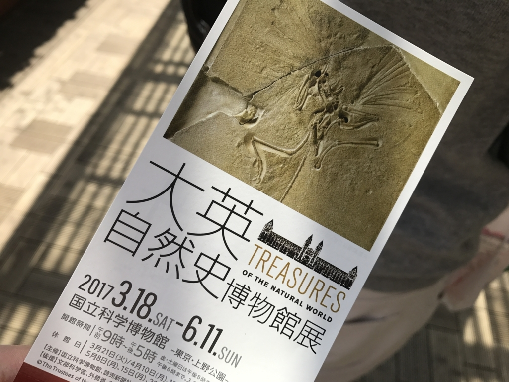
友人と上野に出かけた。とりあえずなんでもよかったのだが、国立博物館の特別展「大英自然史博物館展」を観てきた。
それほど面白いというわけでもなく、結局は人混みを見に行ったようなもんだったけど――
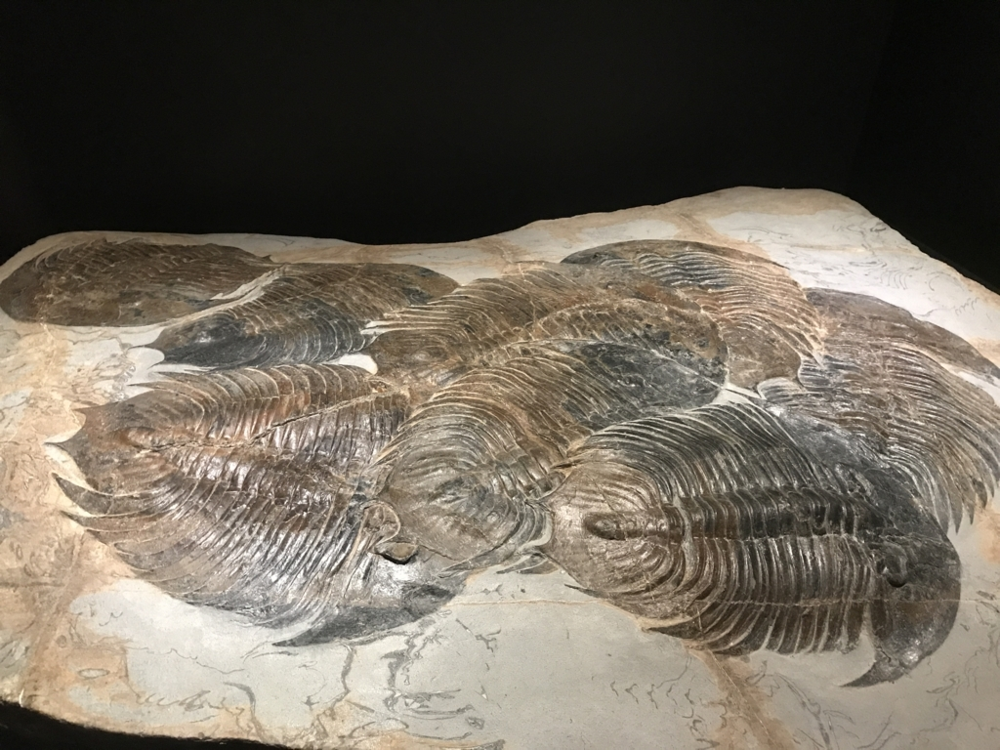
「集団で交尾したまま窒息死したと思われる三葉虫」が見れたのは個人的によかった。俺より世界を楽しんでそうで、こっちまでほっこりする。
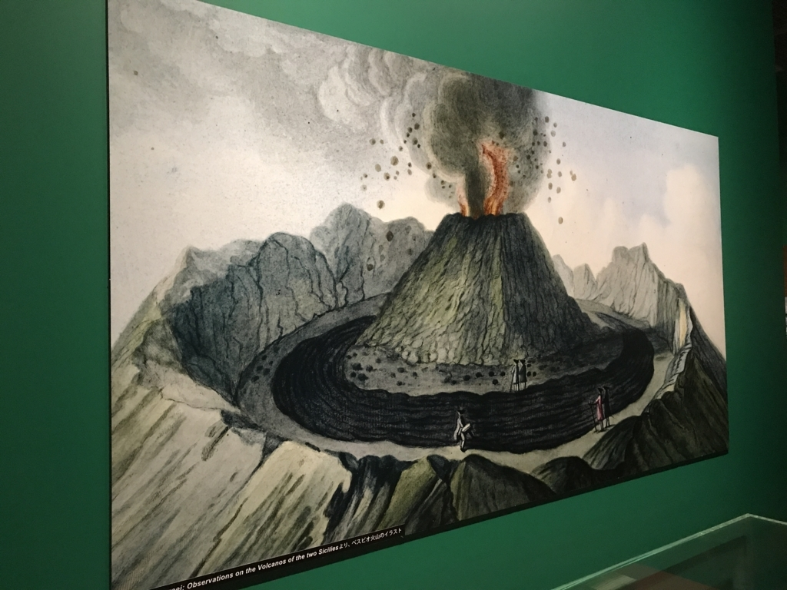
あと、ヴェスヴィオ火山の絵で、周りの人が余裕ぶっこいてるのがシュールでよかった。
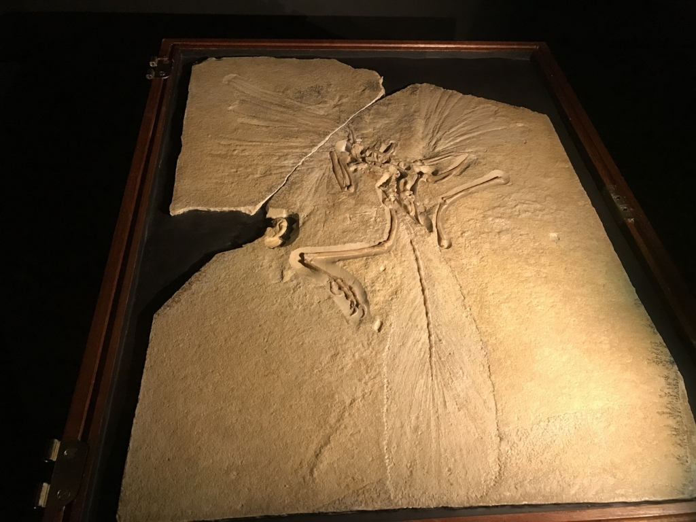
目玉は始祖鳥の化石だったんだろうか。なんかすごい体勢で死んどるなーと思ったけど、それ以上はとくに何も思わなかった。最近は感受性の低下が著しいなぁ。
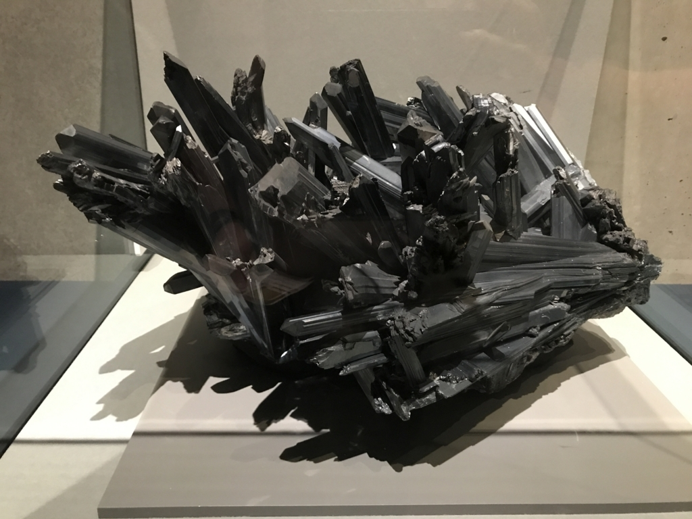
でも、輝安鉱っていう石はきれいだった。これは愛媛県の西条市でとれたものらしい。
重要なアンチモンの鉱石鉱物。輝蒼鉛鉱(きそうえんこう)とは同一構造。中間相に対し、かつて幌別鉱(ほろべつこう)という名称が提唱されたが、現在は用いられていない。メタ輝安鉱metastibniteと称する赤色粉末状の非晶質物質と同質異像関係にあるという説もあるが、メタ輝安鉱は少量の水分を含んでいるという説もある。比較的低温生成の熱水鉱床中に産し、黄鉄鉱、閃(せん)亜鉛鉱、ベルチェ鉱などと共存し、柱状から針状の結晶をなす。愛媛県西条市市ノ川(いちのがわ)鉱山（閉山）のものは、結晶の大きさ、結晶面の複雑さで世界的に有名であったが、現在は中国からかなりの良晶が発見されている。英名は元素アンチモンの別名スチビウムstibiumに由来する。
アンチモンってのはレアメタルの一種で、いろんなところで使われてるらしい。「ある修道会で豚にアンチモンを与えたら（駆虫薬として働き）豚は丸々と太った。そこで栄養失調の修道士に与えたところ、太るどころではなく死んでしまった。それゆえアンチ・モンク（修道士に抗する）という名が与えられた」という話が割と面白かった（アンチモン - Wikipediaより）。
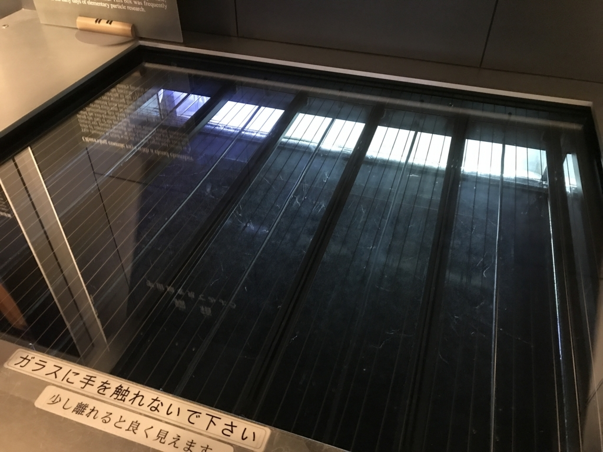
しかしなんといっても、常設展の宇宙線がいちばん心癒された。目に見えない世界が見えるようになるの、とっても不思議。「持って帰りたい」「家にも作りたい」などと話していたのだけど、どれぐらいかかるのだろうか。
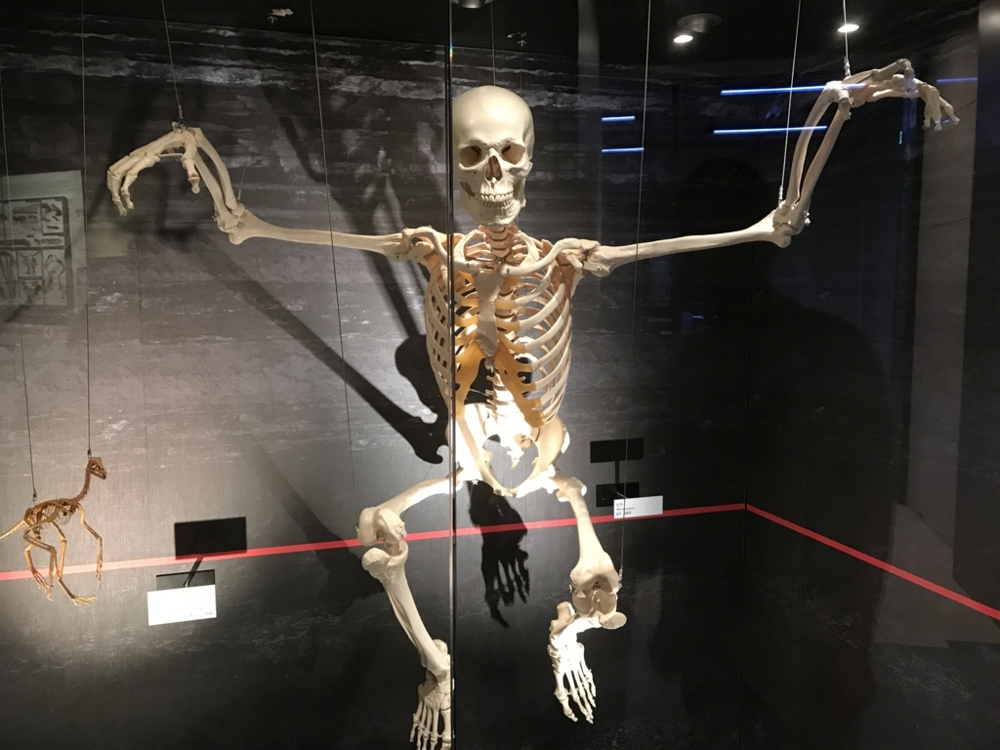
やたらダイナミックなポーズをとってる人骨標本や――
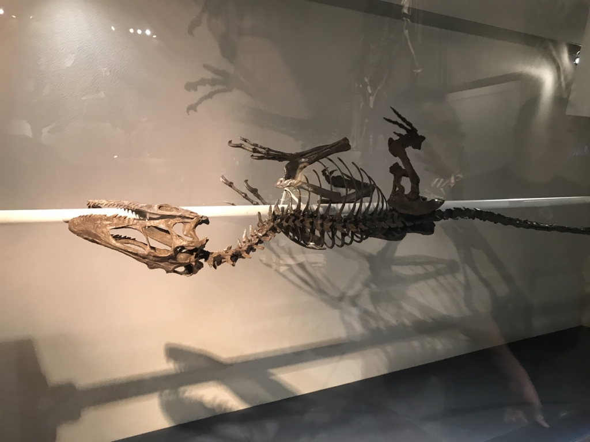
恐竜の化石を丸焼きみたいにぐるぐる回していろんなところから見れるのも割と面白かった。
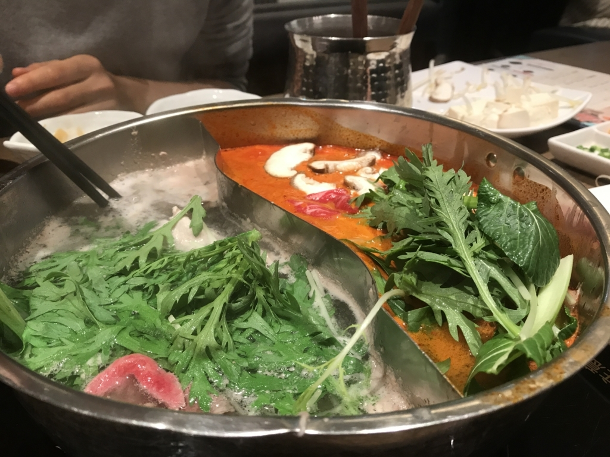
昼ごはんにしゃぶしゃぶ食べて解散。食べ放題の割と安いところだったけど、最近は脂っぽいのがちょっと苦手で、焼き肉より美味しく感じられた。そうか、俺はもうしゃぶしゃぶおじさんになったんだな。
5月23日～24日
5月27日
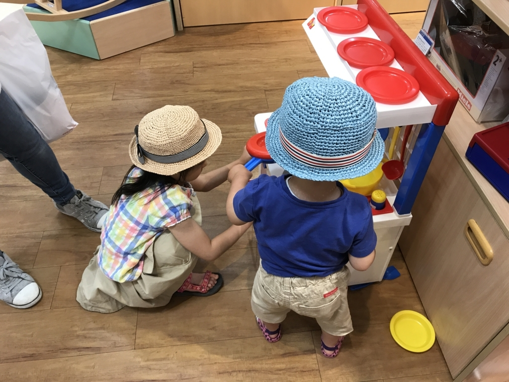
おかんと妹の買い物に付き合った。甥っ子・姪っ子を見張る役目を仰せつかったのだけど、割と大変だった。甥っ子は確かまだ2歳になってないのだけど、ユニクロのシャツ（ディズニーの箱に入ってる）をカゴにいれ、勝手にレジまで持っていけるんだよ。なんか「ダメだよ」とも言いづらくなって、そのままお金を払ったけど、もちろんサイズは合わない。たぶん、妹の寝間着になると思う。
そのあと、お礼でもないだろうけど、ロフトで扇子を買ってもらった。6,000円ぐらいのだけど、ピシッと閉まって、使ってて気持ちいい。ちょうど前に使ってたのをなくしてしまって新しいのを探していたからとてもうれしい。
帰りしな、おかんに冷蔵庫を買ってあげた。今月のお小遣いが吹っ飛んだけど、7万円ぐらいでちょうどいいサイズのを買えてよかった（震え声
5月28日
一日中寝てた。
5月29日
朝一の便で、松山へ帰った。少し靄が出ていたけれど、海ほたると富士山が見えて、いい気分だった。
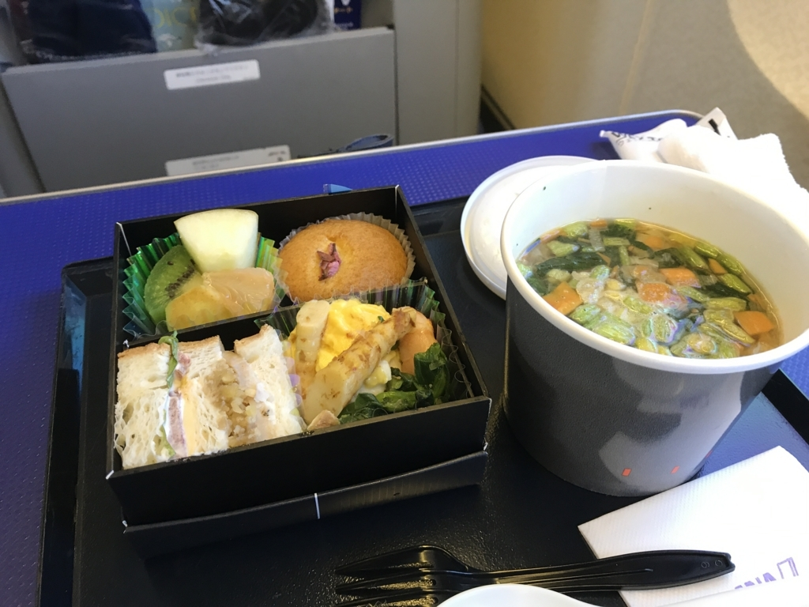
今回はちゃんとご飯も頂いた。まぁ、でも、羽田 → 松山でプレミアムクラスに乗る意味はあまりないな。とりあえずモノは試しと2往復乗ってみたけど、だいたいわかった気がするし、今度からは普通の席に乗ると思う。
自分は週末の夜に松山を出て、週明けの朝一で松山に帰ることが多いのだけど、教訓としては、
- 東京行の便は時間が変更できるように割引を使わないで乗る（松山行は早朝固定なので、割引で買っていい）
- 松山行の早朝便は、空港が混まないし、ラウンジでゆっくりする時間ないから、プレミアムクラスの利は薄い
- 市川からだと 5:30 の京成に乗れば羽田の早朝便（7:30）にゆったり間に合って、しかも電車で座れる（ことが多い）
- 通路側の方がサービスを受けやすい（とくに夜便は窓側はあまり意味がないな……寝るんだったら別だけど）
みたいな。ジェットスターともうまく使い分けて、一番楽で都合のいい時間に行き来できればええのぅ。
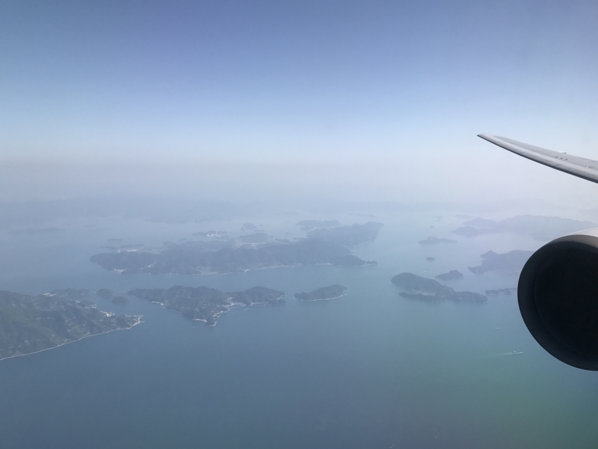
今回はそんな感じ。小岩で日付が変わるまで飲んで、タイ古式マッサージデビューした（別にエロいのはないよ）とか、他にも話はあるんだけど、まぁ、今回はこれぐらいで。